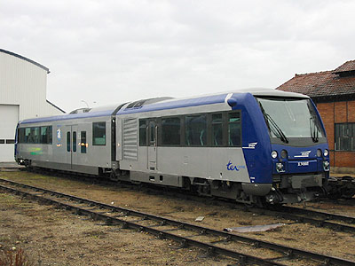
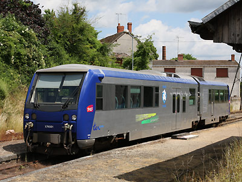

X 74500
Les X 74500 sont des autorails articulés à écartement métrique construits à cinq exemplaires par CFD-Bagnères (ex-Soulé) et mis en service en 2002 pour l'exploitation de la ligne du Blanc-Argent, limitée de nos jours à sa section centrale (Salbris-Romorantin-Valençay).
Quelques données techniques
Constructeur : CFD-Bagnères
Motorisation : 6 cylindres en ligne MAN
Transmission : Voith Hydrodynamique.
Puissance totale : 300 kW
Vitesse maximale en service : 85 km/h (l'infrastructure de la ligne impose 70 km/h en pratique)
Longueur : 26,240 m
Masse : 40,5t
Pour plus d'info :
La fiche X 74500 sur Wikipedia
La page des X 74500 du site de Jacky Liennard consacré au Chemins de fer du Blanc-Argent

L'X 74502 à Romorantin, livré mais pas encore homologué (27/12/2002)

L'X 74501 à Luçay le Male, peu avant la fermeture de la section Valançay-Luçay (07/06/2009)